✟ Tradiciones
📍Descripción:
En la ciudad de La Paz, cada Viernes Santo se realiza una solemne procesión desde la Basílica de San Francisco hasta el Cementerio General. Miles de fieles acompañan la imagen del Cristo Yacente con velas, rezos y cánticos. Las calles se llenan de devoción, con personas vestidas de luto y recogimiento total. Es una de las expresiones más sentidas del catolicismo paceño.
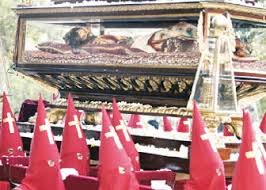
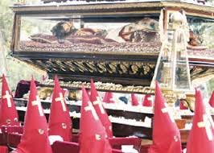
📍Descripción:
En la Semana Santa cochabambina, es tradicional visitar 7 iglesias el Jueves Santo como signo de acompañamiento a Jesús. Luego, en familia, se sirve una comida compuesta por 12 platos sin carne. Esta costumbre es más que gastronómica: representa un acto espiritual y de unión familiar, muy arraigado en la cultura del valle.

📍Descripción:
En las afueras de Santa Cruz, especialmente en pueblos como Porongo o Cotoca, se escenifica la pasión y muerte de Cristo en un Vía Crucis viviente. Participan vecinos vestidos como personajes bíblicos, recorriendo caminos rurales en medio del calor y la fe popular. Es una representación emotiva que mezcla arte, devoción y comunidad.
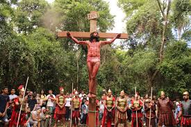
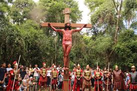
📍Descripción:El Domingo de Ramos, la ciudad se llena de ramos de laurel, olivo y flores que luego se colocan en las casas. Se realizan procesiones con música tradicional chapaca y mucha participación.
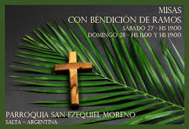
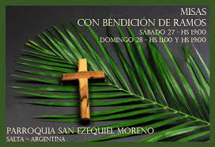
📍Descripción: En Semana Santa, resalta la procesión del Cristo del Gran Poder, que reúne a cientos de feligreses vestidos de luto. La marcha se inicia en la iglesia del mismo nombre y recorre el centro de la ciudad. Se acompaña con rezos, cánticos y velas, en un ambiente de profunda solemnidad. Además, en el Santuario del Socavón se realizan misas especiales y actos litúrgicos con música sacra y reflexión.
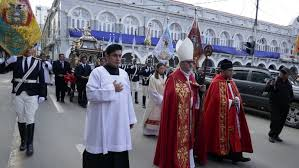
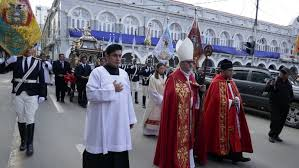
📍Descripción: En el Viernes Santo, los potosinos participan de la tradicional caminata de penitencia desde la iglesia San Benito hasta el cerro Calvario. Muchos fieles lo hacen descalzos o de rodillas, en señal de sacrificio. La procesión va acompañada de imágenes religiosas y tambores fúnebres. También se realiza el Sermón de las Siete Palabras en la Catedral y se colocan altares en casas y calles para el paso de la Virgen Dolorosa.
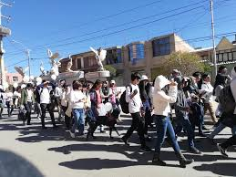
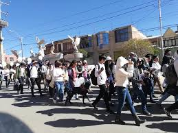
📍Descripción: En pueblos como San Ignacio de Moxos y Loreto, se realiza el Vía Crucis fluvial: las estaciones se representan mientras se navega en canoas decoradas con flores, ramas y cruces. Las comunidades acompañan con rezos en lengua moxeña y cantos tradicionales. Es una mezcla única de espiritualidad cristiana y cosmovisión amazónica. También se preparan platos como el pescado a la brasa y masacos sin carne.
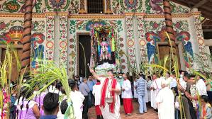
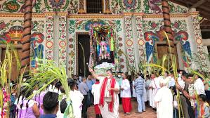
📍Descripción: El Viernes Santo se realiza este sermón acompañado de música sacra en templos coloniales como San Felipe Neri o La Recoleta. Sucre vive la Semana Santa con sobriedad y solemnidad.
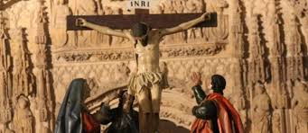
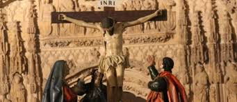
📍Descripción:En Cobija y otras poblaciones, las misas comunitarias al aire libre reúnen a las familias. El Viernes Santo se realiza la Procesión del Silencio, donde los fieles caminan en total quietud, con velas encendidas, siguiendo al Cristo Yacente. En algunas zonas, se organizan también dramatizaciones sencillas de la Pasión de Cristo, y la comunidad colabora llevando cruces o participando como actores. El ambiente es de recogimiento y unidad familiar.
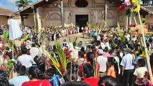
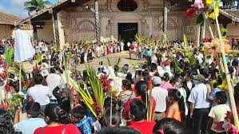
Hecho por: Jaseft Angel Tapia Quisbert